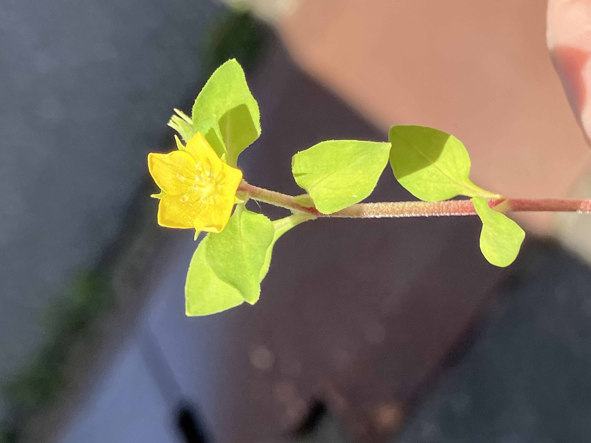

Norio Mori
C# と Windowsフォームを勉強中
var norio = new Developer
{
Language = "C#",
Learning = "Windows Forms",
Tool = "Visual Studio"
};

自己紹介
プログラミング学習中です。Visual Studioを使ってC#アプリケーション開発に挑戦しています。
スキル
- C#
- HTML
- CSS
- Windows Forms
趣味
- パソコン
- プログラミング
- 写真
- 動画鑑賞